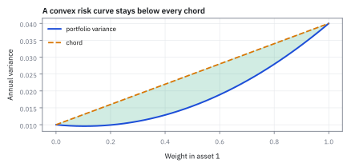

8.1 Global vs Local Minima
แยกจุดต่ำสุดใกล้ตัวออกจากจุดต่ำสุดของทั้งโจทย์
backtest ปรับน้ำหนักสัญญาณ w ตัวเดียว รันโค้ดเดิมกับข้อมูลเดิมสองรอบ รอบแรกเริ่มที่ w = −1 รอบสองเริ่มที่ w = +1 ได้คำตอบคนละตัว กำไรต่างกันเท่าไร และตัวไหนคือคำตอบจริง?
เฉลย: รอบแรกจบที่ w = −2 กำไร \$64 ล้าน รอบสองจบที่ w = 3 กำไร \$189 ล้าน ต่างกัน 125 ล้านจากจุดเริ่มอย่างเดียว ทั้งคู่ผ่านทุกการตรวจในละแวกของตัวเอง แต่มีแค่ w = 3 ที่ต่ำสุดทั้งแผนที่ ส่วนโจทย์ลดความเสี่ยงของพอร์ตเป็นชามใบเดียว เริ่มตรงไหนก็ได้คำตอบเดียว
local minimum คือจุดต่ำเมื่อมองใกล้ ๆ ส่วน global minimum ต่ำสุดในทุกจุดที่อนุญาต ใช้แยกคำตอบที่ algorithm พบจากคำตอบที่โจทย์ต้องการจริง
ศัพท์ที่ใช้ในหัวข้อนี้
- global minimum
- จุดที่ให้ค่า objective ไม่สูงกว่าจุดใดใน feasible set ใช้เป็นคำตอบต่ำสุดของปัญหาทั้งหมด
- local minimum
- จุดที่ไม่มีเพื่อนบ้านใกล้ ๆ ให้ objective ต่ำกว่า ใช้บอกผลที่วิธีค้นหาเฉพาะบริเวณอาจหยุด
- convexity
- ความโค้งแบบชามของ function ซึ่งกราฟอยู่ไม่สูงกว่าเส้นเชื่อมคู่ตำแหน่ง ใช้รับรองว่า local minimum ทุกจุดเป็น global minimum
- feasible set
- ชุดคำตอบที่ผ่านข้อจำกัดทั้งหมด ใช้กำหนดบริเวณที่อนุญาตให้เปรียบเทียบ objective
- positive semidefinite
- คุณสมบัติของ matrix ที่ quadratic form ไม่ติดลบทุกทิศ ใช้พิสูจน์ convexity หรือความโค้งแบบชามของ portfolio variance
- variance
- ค่าเฉลี่ยของ squared deviation จาก mean ใช้วัดขนาดความกระจายและสร้าง objective ความเสี่ยงของพอร์ต
- covariance
- ค่าที่วัดว่าสองผลตอบแทนเคลื่อนร่วมกันอย่างไร ใช้รวมความเสี่ยงข้ามสินทรัพย์ใน portfolio variance
- correlation
- covariance ที่หารด้วย volatilities ให้สเกลอยู่ระหว่าง -1 กับ 1 ใช้เปรียบเทียบการเคลื่อนร่วมกัน
- volatility
- standard deviation ของผลตอบแทนตาม horizon ที่ระบุ ใช้รายงานความเสี่ยงในหน่วยเดียวกับ return
- standard deviation
- square root ของ variance ใช้แปลงความกระจายกลับมาอยู่ในหน่วยเดียวกับ return
- alpha
- ในบทนี้หมายถึงสัดส่วนผสมระหว่างคู่ตำแหน่ง ใช้เลือกทุกตำแหน่งบนเส้นตรงที่เชื่อมกัน
- gradient descent
- วิธีค้นหาที่ก้าวสวนความชันทีละนิดจนความชันเป็นศูนย์ ใช้หาจุดต่ำสุดเมื่อแก้สมการตรง ๆ ไม่ได้ หัวข้อ 8.7 ลงรายละเอียด
- multi-start
- การรัน optimizer ซ้ำจากหลายจุดเริ่มแล้วเก็บผลที่ดีที่สุด ใช้กับโจทย์ที่มีหลายหุบ แต่ไม่พิสูจน์ว่าได้ global
- overfitting
- การปรับ parameter จนจำสัญญาณรบกวนของข้อมูลอดีตได้ ผลย้อนหลังสวยแต่ใช้จริงแย่ ใช้เตือนว่ายอดที่ดีที่สุดใน backtest อาจเป็นแค่โชค
- Kelly criterion
- กฎเลือกขนาดเดิมพันที่ทำให้ค่าเฉลี่ยของ log ของความมั่งคั่งสูงสุด ใช้เป็นตัวอย่างโจทย์ที่ convex หัวข้อ 17.2 ลงรายละเอียด
- mixed-integer programming (MIP)
- optimization ที่ตัวแปรบางตัวต้องเป็นจำนวนเต็ม เช่นถือหรือไม่ถือหุ้นตัวหนึ่ง ใช้กับข้อจำกัดแบบนับจำนวน ซึ่งทำให้โจทย์ไม่ convex
สัญลักษณ์ที่ใช้ในหัวข้อนี้
| สัญลักษณ์ | ความหมาย | หน่วย |
|---|---|---|
| $f(x)$ | objective ที่ตำแหน่ง $x$ | ในตัวอย่างกลยุทธ์เป็นล้านดอลลาร์ |
| $x^\star$ | จุดคำตอบที่กำลังตรวจ | เหมือน $x$ |
| $r$ | รัศมีละแวกของ local minimum | เหมือน $x$ |
| $\alpha$ | สัดส่วนผสมระหว่างคู่ตำแหน่ง อยู่ระหว่าง 0 กับ 1 | unitless |
| $w$ | น้ำหนักสัญญาณของกลยุทธ์ ติดลบได้ แปลว่าเล่นสวนสัญญาณ | unitless |
| $V$ | covariance matrix ของ annual returns | (decimal return)² ต่อปี |
| $p$ | น้ำหนักพอร์ตของสินทรัพย์ 1 และ 2 | fraction of portfolio value |
| $H$ | Hessian matrix ของ objective | เหมือน $V$ |
| $D_1,\ D_2$ | leading principal minor ลำดับ 1 และ 2 ของ $H$ | เหมือน $V$ และกำลังสองของมัน |
| $\lambda_1,\ \lambda_2$ | eigenvalue ของ $H$ | เหมือน $V$ |
| $\eta$ | ขนาดก้าวของ gradient descent | ต่อหน่วยความชัน |
| $a_k,\ b_k$ | ตำแหน่ง $w$ หลังก้าวที่ $k$ ของรอบที่เริ่ม −1 และรอบที่เริ่ม +1 | เหมือน $w$ |
ที่มาที่ไป: คำว่าคำตอบที่ดีที่สุด มีสองความหมายที่ไม่เหมือนกัน
ปัญหาที่ทำให้ต้องแยกสองคำนี้ออกจากกันเกิดขึ้นจริงทุกครั้งที่มีคนปรับ parameter ของกลยุทธ์
โปรแกรมรันแล้วรายงานว่าเจอคำตอบแล้ว ผู้ใช้เชื่อ แล้วเอาไปใช้จริง โดยไม่รู้ว่ามันเจอแค่ก้นหลุมที่ใกล้ที่สุด จากจุดที่มันบังเอิญเริ่ม ไม่ใช่ก้นหลุมที่ลึกที่สุด
อาการที่สังเกตได้คือรันสองครั้งด้วยจุดเริ่มต่างกัน แล้วได้คำตอบคนละเรื่อง
หัวข้อนี้ให้เงื่อนไขที่ถ้าผ่าน จะไม่มีปัญหานี้เลย และโชคดีที่ปัญหาจัดพอร์ตมาตรฐานผ่านเงื่อนไขนั้น แต่ปัญหาปรับกลยุทธ์ส่วนใหญ่ไม่ผ่าน ซึ่งต้องรู้ไว้ก่อนจะเชื่อผลที่รันออกมา
ที่มาทางประวัติศาสตร์ — จาก Fermat สู่ Fenchel และ Rockafellar
ในทศวรรษ 1630 Pierre de Fermat ริเริ่มแนวคิดการหาค่าสูงสุดและต่ำสุดด้วยการตั้ง derivative ให้เท่ากับศูนย์ ซึ่งเป็นจุดกำเนิดของเงื่อนไข stationary point ทว่าตลอดสามร้อยปีต่อมา นักคณิตศาสตร์มักมองหาเพียงจุดที่ความชันเป็นศูนย์ โดยไม่สามารถแยกแยะได้ง่ายว่าจุดนั้นเป็นเพียงหลุมท้องถิ่น หลุมที่ลึกที่สุดของทั้งระบบ หรือเป็นเพียง saddle point
จุดเปลี่ยนเกิดขึ้นช่วงทศวรรษ 1940–1950 เมื่อ George Dantzig พัฒนา simplex method สำหรับ linear programming และ Harry Markowitz เสนอแบบจำลองจัดพอร์ตในปี 1952 ความจำเป็นในการแก้ปัญหาขนาดใหญ่ด้วยคอมพิวเตอร์ทำให้นักคณิตศาสตร์ตระหนักว่า เส้นแบ่งสำคัญของ optimization ไม่ใช่ระหว่างความเชิงเส้นกับไม่เชิงเส้น แต่คือ convexity ดังที่ R. Tyrrell Rockafellar สรุปไว้ในปี 1970 ว่าปัญหาที่มี convexity รับรองว่าทุกคำตอบที่เจอในระดับท้องถิ่นคือคำตอบที่ดีที่สุดของทั้งระบบเสมอ
โจทย์สองข้อบนโต๊ะเดียวกัน
ข้อแรก ลดความเสี่ยงของพอร์ตสองสินทรัพย์ ความผันผวนรายปี 20% กับ 10% correlation 0.30 objective คือ variance ของพอร์ต ข้อสอง ปรับน้ำหนักสัญญาณ w ให้ผลขาดทุนย้อนหลัง $f(w)=3w^4-4w^3-36w^2$ ล้านดอลลาร์ต่ำสุด กำไรคือลบของผลขาดทุน
ทั้งสองข้อเรียบและหา derivative ได้ แต่ความเรียบไม่ได้แปลว่ามีคำตอบเดียว หัวข้อนี้จะแสดงว่าข้อแรกเป็นชามใบเดียว ข้อสองมีสองหุบ และเงื่อนไขที่แยกสองแบบนี้ออกจากกันคือ convexity
ตัวเลข 3, −4, −36 ถูกเลือกให้จุดราบออกมาลงตัวจนคิดมือได้ พื้นผิวของกลยุทธ์จริงไม่มีสูตรปิด มันคือผลของการรัน backtest ทีละค่า แต่มีหลายหุบแบบเดียวกัน
ขั้นที่ 1 — นิยามจุดต่ำสุดสองระดับ
คำว่าต่ำสุดมีสองความหมาย ต่างกันแค่วลีเดียว และการสับสนสองอันนี้คือที่มาของกลยุทธ์ที่ดูดีในคอมพิวเตอร์แต่พังจริง บรรทัดเหล่านี้เป็นนิยาม
global เทียบกับทุกจุดที่อนุญาตในแผนที่ทั้งใบ local เทียบเฉพาะจุดที่ห่างจาก x⋆ ไม่เกินรัศมี r ภาษาคนคือ local แปลว่าคลำรอบเท้าแล้วไม่มีอะไรต่ำกว่า global แปลว่าต่ำที่สุดในแผนที่ทั้งใบ
algorithm ทุกตัวดูได้แค่รอบเท้า จึงรับประกันได้แค่ local ยกเว้นกรณีเดียว คือ function เป็น convex ซึ่งขั้นที่ 3 จะพิสูจน์ว่าสองนิยามยุบเป็นอันเดียว
ขั้นที่ 2 — นิยามของ convexity: เส้นเชื่อมอยู่เหนือกราฟ
มีเงื่อนไขหนึ่งที่ถ้าผ่าน จะไม่มีปัญหาหลายหุบเลย บรรทัดนี้เป็นนิยามของมัน
เลือกจุดคู่หนึ่งบนกราฟ ลากเส้นตรงเชื่อมกัน ถ้าเส้นตรงอยู่เหนือหรือแตะกราฟเสมอไม่ว่าเลือกคู่ไหน function นั้น convex α เลือกตำแหน่งบนเส้นระหว่าง x กับ y ฝั่งซ้ายคือค่าจริงของ function ฝั่งขวาคือค่าบนเส้นตรง
ขั้นที่ 3 — พิสูจน์ว่า convexity รับรองว่า local minimum ทุกจุดคือ global minimum
สมมติว่า x⋆ เป็น local minimum แต่มีจุด y ไกลออกไปที่ต่ำกว่า แล้วดูว่าเกิดอะไรบนเส้นตรงจาก x⋆ ไป y
บรรทัดที่สองใช้นิยามของขั้นที่ 2 ตรง ๆ จากนั้นจัดรูปให้เห็นว่าค่าบนเส้นคือค่าที่ x⋆ บวก α คูณผลต่าง ซึ่งผลต่างติดลบเพราะ y ต่ำกว่า ค่าบนเส้นจึงลดลงทันทีที่ก้าวออกจาก x⋆
เลือก α เล็กพอ จุดใหม่อยู่ในรัศมี r แต่ต่ำกว่า x⋆ ขัดกับที่ว่า x⋆ ต่ำสุดรอบตัว สมมติฐานจึงผิด ใน function ที่ convex ไม่มีหุบเขาปลอม ทุก local minimum คือ global minimum
ขั้นที่ 4 — กาง variance ของพอร์ตเป็นพหุนาม และดูว่า 0.006 มาจากไหน
ของที่โจทย์ให้: σ₁ = 0.20, σ₂ = 0.10, ρ = 0.30 สร้าง V ก่อน แล้วคูณ pᵀVp ออกมาเต็ม ๆ ให้เป็นพหุนามที่แทนตัวเลขได้ทันที ทุกช่องของ V มีหน่วยเป็น variance ต่อปี ไม่ใช่เปอร์เซ็นต์
บรรทัดแรกคือ variance ของผลรวมถ่วงน้ำหนักจากขั้นที่ 3 ของหัวข้อ 7.5 เขียนเป็น pᵀVp พจน์กลาง 0.012 = 2 × 0.006 เพราะช่อง V₁₂ กับ V₂₁ มีค่าเท่ากันและถูกนับสองครั้ง
ต้องกางออกก่อน เพราะนิยามในขั้นที่ 2 พูดถึงค่าของ function ล้วน ๆ ยังไม่แตะ derivative เลย อยากทดสอบนิยามตรง ๆ ต้องแทนตัวเลขได้ และรูปพหุนามนี้แทนได้ทันที
ขั้นที่ 5 — ทดสอบนิยามกับพอร์ตจริง: 0.0155 ต่ำกว่า 0.0250
เลือกพอร์ตสุดขั้วมาเป็นปลาย ทุ่มทั้งหมดในสินทรัพย์ 1 คือ x = (1, 0) ทุ่มทั้งหมดในสินทรัพย์ 2 คือ y = (0, 1) แล้วดูที่กึ่งกลาง α = 0.5 คือพอร์ตครึ่งต่อครึ่ง
ค่าจริงที่กึ่งกลางอยู่ใต้เส้นตรง นิยามผ่านสำหรับคู่นี้ ช่องว่าง 0.0095 ไม่ใช่เลขบังเอิญ มันคือ variance ที่ลดได้จากการผสมสองสินทรัพย์ ขั้นถัดไปจะแสดงว่ามันมีสูตรปิด
ขั้นที่ 6 — ช่องว่าง 0.0095 มีสูตรปิด และมันคือ diversification
สำหรับ objective กำลังสอง f(x) = xᵀVx เรียกจุดผสมว่า z กางค่าที่ z ออกมา แล้วลบออกจากค่าบนเส้นตรง จะเหลือก้อนเดียว ตั้งชื่อก้อนนั้นว่า q
α − α² = α(1 − α) และ (1 − α) − (1 − α)² = α(1 − α) สองก้อนแรกจึงมีตัวคูณร่วม ส่วนพจน์ไขว้ติดลบ 2α(1 − α) รวบได้เป็นกำลังสองของผลต่าง x − y ใส่ตัวเลขแล้วได้ 0.0095 ตรงกับขั้นที่ 5
ช่องว่างเป็นบวกสำหรับทุกคู่เมื่อ V เป็น positive semidefinite ความ convex ของโจทย์พอร์ตกับความเป็น positive semidefinite ของ covariance matrix จึงเป็นเรื่องเดียวกันเป๊ะ
ขั้นที่ 7 — ครบทุกคู่จุดด้วย Hessian: minor กับ eigenvalue ตอบตรงกัน
ทดสอบทีละคู่ไม่มีวันครบ Hessian ครอบคลุมทุกจุดพร้อมกัน หา derivative อันดับหนึ่ง แล้วหาซ้ำอีกครั้ง
H = 2V คงที่ ไม่ขึ้นกับ p เลย minor ทั้งสองเป็นบวก H จึงเป็น positive definite ทุกจุด พื้นผิว variance เป็นชามใบเดียวทั้งพื้นผิว
eigenvalue ทั้งสองรวมกันได้ trace = 0.100 และคูณกันได้ det = 0.001456 จึงเป็นรากของสมการกำลังสองนี้ สองวิธีต้องตอบตรงกัน เพราะ det บวกแปลว่าเครื่องหมายเหมือนกัน และ trace บวกแปลว่าบวกทั้งคู่ minor test คือ eigenvalue test ที่ไม่ต้องถอดราก
ใช้ minor เมื่อทำมือ ใช้ eigenvalue เมื่ออยากรู้ว่าชามแบนในทิศไหน λ₂ เล็กกว่า λ₁ ราว 4.7 เท่า แปลว่ามีทิศหนึ่งที่พื้นผิวแบนกว่าอีกทิศเกือบ 5 เท่า
ขั้นที่ 8 — หุบสองใบของกลยุทธ์: หาจุดที่พื้นราบ
กลับไปที่โจทย์ข้อสอง จุดต่ำสุดต้องมีความชันเป็นศูนย์ก่อน จึงหา derivative แล้วแยกตัวประกอบ รูปที่แยกแล้วบอกตำแหน่งจุดราบทันที โดยไม่ต้องแก้สมการกำลังสาม
f วัดผลขาดทุนของ backtest หน่วยล้านดอลลาร์ หา derivative ทีละพจน์ เลขชี้กำลังลงมาคูณข้างหน้าแล้วลดลงหนึ่ง จากนั้นดึงตัวร่วม 12w ออกมา เพราะทุกพจน์มี w อยู่อย่างน้อยหนึ่งตัว
วงเล็บที่เหลือแยกด้วยสองจำนวนที่คูณกันได้ −6 และบวกกันได้ −1 คือ −3 กับ +2 ผลคูณเป็นศูนย์เมื่อตัวใดตัวหนึ่งเป็นศูนย์ จึงได้จุดราบสามจุด เทียบกับโจทย์พอร์ตที่มีจุดราบจุดเดียว นี่คือความต่างทั้งหมด
ขั้นที่ 9 — จัดประเภทสามจุดด้วยความโค้ง แล้ววัดความลึก
ความโค้งเป็นบวกคือก้นหุบ ความโค้งเป็นลบคือยอดเนิน จากนั้นแทนสามค่ากลับเข้า f เพื่อดูว่าหุบไหนลึกกว่า
w = −2 และ w = 3 เป็นก้นหุบทั้งคู่ ส่วน w = 0 เป็นยอดเนิน ทั้งสองก้นหุบผ่านเงื่อนไขอันดับหนึ่งและอันดับสองเหมือนกันทุกประการ แต่กำไร 64 กับ \$189 ล้าน ต่างกัน 125 ล้าน w = 3 จึงเป็น global minimum
f″ วัดความโค้งตรงจุดนั้นเท่านั้น มันไม่รู้ว่าอีกฟากของสันเขาที่ w = 0 มีอะไร วิธีเดียวที่จะรู้ว่าอันไหน global คือหาจุดราบให้ครบแล้วเทียบค่า ทำได้ที่นี่เพราะพหุนามดีกรี 4 มีจุดราบไม่เกิน 3 จุด โจทย์จริงที่มี 20 parameter ทำแบบนี้ไม่ได้
ขั้นที่ 10 — ยืนยันว่ากลยุทธ์ไม่ convex ด้วยตัวอย่างค้านคู่เดียว
ใช้นิยามเดียวกับขั้นที่ 5 แต่เอาก้นหุบทั้งสองมาเป็นปลาย x = −2 และ y = 3 ที่ α = 0.5 กึ่งกลางอยู่ที่ 0.5(−2) + 0.5(3) = 0.5
นิยามต้องการให้ค่าจริงไม่สูงกว่าเส้นตรง แต่ค่าจริงสูงกว่าถึง 117.19 นิยามจึงล้ม function นี้ไม่ convex อีกทางที่เร็วคือดูความโค้ง f″(0) = −72 ติดลบ ขณะที่ f″(−2) = 120 บวก ความโค้งเปลี่ยนเครื่องหมายระหว่างทาง
การพิสูจน์ว่า convex ต้องจริงกับทุกคู่ จึงต้องใช้ Hessian ที่ครอบคลุมทุกจุดแบบขั้นที่ 7 แต่การพิสูจน์ว่าไม่ convex ต้องการตัวอย่างค้านคู่เดียว จึงสั้นกว่ามาก และควรลองก่อนเสมอเมื่อสงสัยว่าโจทย์มีหลายหุบ
ขั้นที่ 11 — ปล่อย gradient descent จากจุดเริ่มสองแห่ง
gradient descent ก้าวสวนความชันทีละนิดด้วยขนาดก้าว η = 0.005 ใช้โค้ดเดิม ข้อมูลเดิม ต่างกันแค่จุดเริ่ม เรียกรอบที่เริ่ม −1 ว่า a และรอบที่เริ่ม +1 ว่า b ตารางเต็มอยู่ถัดจากขั้นนี้
ความชันที่จุดเริ่มคือ f′(−1) = 12(−1)(−4)(1) = 48 และ f′(1) = 12(1)(−2)(3) = −72 ความชันบวกก็ถอยซ้าย ความชันลบก็เดินขวา รอบ a จึงลงหุบ −2 กำไร \$64 ล้าน รอบ b ลงหุบ 3 กำไร 189 ล้าน
เส้นแบ่งคือเครื่องหมายของ f′ ซึ่งเปลี่ยนที่ w = 0 พอดี สันเขาจึงอยู่ที่ยอดเนินของขั้นที่ 9 เริ่มฝั่งไหนก็ตกหุบฝั่งนั้น algorithm ไม่ได้หลงทาง มันไม่เคยเห็นแผนที่ทั้งใบ
gradient descent ทั้งสองรอบ ก้าวต่อก้าว (η = 0.005)
| ก้าว k | รอบ a: w | ความชัน | รอบ b: w | ความชัน |
|---|---|---|---|---|
| 0 | −1.0000 | +48.00 | +1.0000 | −72.00 |
| 1 | −1.2400 | +47.95 | +1.3600 | −89.93 |
| 2 | −1.4797 | +41.38 | +1.8096 | −98.48 |
| 3 | −1.6867 | +29.72 | +2.3020 | −82.95 |
| 4 | −1.8353 | +17.54 | +2.7168 | −43.55 |
| 5 | −1.9230 | +8.75 | +2.9345 | −11.38 |
| 6 | −1.9667 | +3.90 | +2.9914 | −1.54 |
| 7 | −1.9862 | +1.64 | +2.9991 | −0.16 |
| จบ | −2.0000 | 0.00 | +3.0000 | 0.00 |
ก้าวแรก ๆ ยาวเพราะความชันสูง ใกล้ก้นหุบความชันเหลือน้อย ก้าวจึงสั้นลงเอง โค้ดตัวเดียวกัน ข้อมูลชุดเดียวกัน รอบ a จบที่กำไร \$64 ล้าน รอบ b จบที่ 189 ล้าน
สัญญาณเตือนบนโต๊ะ และทางแก้ที่ใช้กันจริง
ถ้าสุ่มจุดเริ่ม 20 ครั้งแล้วได้ parameter ที่ดีที่สุดไม่ซ้ำกันเลย นั่นไม่ใช่ปัญหาของโค้ด แต่เป็นหลักฐานว่าพื้นผิวมีหลายหุบ
ทางแก้ที่ใช้จริงคือ multi-start สุ่มจุดเริ่มหลายจุดแล้วเก็บผลที่ดีที่สุด แต่ต้องรู้ตัวว่านั่นคือการยอมรับว่าได้แค่ดีพอ ไม่ใช่ดีที่สุดที่พิสูจน์ได้ และยิ่งสุ่มมากยิ่งเสี่ยง overfitting เพราะกำลังเลือกค่าสูงสุดจากตัวอย่างสุ่มจำนวนมาก กลไกเดียวกับผู้จัดการกองทุนที่ดีที่สุดในหลายคนของหัวข้อ 1.5
เอาข้อสรุปไปวางบนปัญหาการเงินจริง 5 ข้อ
| ปัญหา | convex ไหม | ผลที่ตามมาบนโต๊ะ |
|---|---|---|
| ลด variance ของพอร์ต | ใช่ เพราะ V เป็น positive semidefinite | คำตอบเดียว เชื่อได้เต็มที่ ใช้เวลาไม่กี่มิลลิวินาที |
| ทำให้ค่าเฉลี่ยของ log ของความมั่งคั่งสูงสุด (Kelly criterion หัวข้อ 17.2) | ใช่ เพราะ log โค้งคว่ำ | จุดสูงสุดมีจุดเดียว |
| ถือหุ้นได้ไม่เกิน 30 ตัว | ไม่ เพราะจำนวนตัวเป็นจำนวนเต็ม | ต้องใช้ mixed-integer programming (MIP) ช้ามาก และคำตอบอาจไม่ใช่ดีที่สุด |
| ปรับ parameter ให้ Sharpe ratio สูงสุด | ไม่ พื้นผิวแบบ f ของหัวข้อนี้ | ยอดเฉพาะถิ่นคือ overfitting หัวข้อ 15.5 |
| calibrate model ความผันผวนกับราคา option | ไม่ | ต้องเริ่มหลายจุดแล้วเทียบ ถ้าคำตอบไม่ซ้ำต้องรายงานเป็นช่วง |
กฎที่ใช้ได้จริง: ถ้าเขียนปัญหาให้ convex ได้ จงเขียน ถ้าเขียนไม่ได้ ให้ยอมรับตั้งแต่แรกว่าได้ดีพอ ไม่ใช่ดีที่สุด
แล้วเอาไปใช้ทำอะไรได้จริงบ้าง
การแยกจุดต่ำสุดใกล้ตัวออกจากจุดต่ำสุดของทั้งโจทย์ ป้องกันกลยุทธ์ที่ดูดีแต่ผิด
ใช้ตรวจว่าปัญหาที่กำลังแก้นั้นปลอดภัยหรือไม่ ถ้าเป็นรูปชามใบเดียว คำตอบที่ได้คือคำตอบที่ดีที่สุดแน่นอน
ใช้อธิบายว่าทำไมการปรับ parameter ของกลยุทธ์แล้วได้ผลต่างกันทุกครั้งที่รัน เพราะจุดเริ่มต้นต่างกันนำไปสู่คนละหุบ
ใช้ตัดสินว่าต้องลองหลายจุดเริ่มต้นหรือไม่ ซึ่งเป็นข้อควรปฏิบัติมาตรฐานในการปรับแบบจำลอง
Figure 8.1a — หุบเขาเฉพาะที่ กับหุบเขาต่ำสุดจริง

เส้น quartic มีหุบที่ $w=-2$ และ $w=3$ แต่หุบขวาต่ำกว่า \$125 ล้าน จุดเริ่มต้นจึงมีผลเมื่อวิธีค้นหามองเห็นเพียงความชันใกล้ตัว
Figure 8.1b — ลากเส้นตรงพาดเส้นโค้งเพื่อทดสอบว่าเป็นชาม

เส้นตรงระหว่างพอร์ตสุดขั้วอยู่เหนือเส้น portfolio variance ตลอดช่วง ช่องว่างที่น้ำหนักครึ่งต่อครึ่งคือ 0.0095 ซึ่งเป็นประโยชน์จาก diversification
Figure 8.1c — ชามความเสี่ยงทรงวงรีของพอร์ต

เส้นชั้นของ $p^{\mathsf T}Vp$ เป็นวงรีซ้อนกันและมี basin เดียว เพราะ eigenvalues ของ $V$ เป็นบวกทั้งคู่
Figure 8.1d — จุดเริ่มต่างกัน คำตอบต่างกัน

จุดส้มคือรอบ a ที่เริ่ม −1 แล้วก้าวซ้ายลงหุบ −2 จุดเขียวคือรอบ b ที่เริ่ม +1 แล้วก้าวขวาลงหุบ 3 เส้นประที่ w = 0 คือสันเขาที่แบ่งสองฝั่ง
คำตอบ — ชามใบเดียวกับหุบสองใบ
คำถาม: รันโค้ดเดิมจาก w = −1 กับ +1 ได้คำตอบต่างกันเท่าไร และโจทย์ไหนเชื่อคำตอบได้?
ของที่มี: ขั้นที่ 4 ถึง 11
1 โจทย์พอร์ต convex: เส้นตรงให้ 0.0250 ค่าจริง 0.0155 และ H = 2V มี minor 0.080 กับ 0.001456 eigenvalue 0.0823 กับ 0.0177 เป็นบวกทั้งหมด ชามใบเดียวทุกจุด
2 โจทย์กลยุทธ์ไม่ convex: ค่าจริง −9.3125 สูงกว่าเส้นตรง −126.5 จุดราบมีสามจุด w = −2 เป็นก้นหุบ (−64) w = 0 เป็นยอดเนิน (0) w = 3 เป็นก้นหุบที่ต่ำที่สุด (−189)
3 เริ่มที่ −1 จบที่ −2 กำไร \$64 ล้าน เริ่มที่ +1 จบที่ 3 กำไร 189 ล้าน ต่างกัน 125 ล้าน เส้นแบ่งอยู่ที่ w = 0
ตรวจเองใน 10 วินาที: 0.3 × 0.2 × 0.1 = 0.006 และ 0.08 × 0.02 − 0.012² = 0.001456 ส่วน 243 − 108 − 324 = −189
แปลว่าอะไร: ก่อนกดรัน optimizer ทุกครั้งให้ถามว่าโจทย์ convex ไหม ถ้าใช่ ตัวเลขที่ได้พิสูจน์ได้ว่าดีที่สุด ถ้าไม่ ตัวเลขเป็นแค่หุบหนึ่งในหลายหุบ ต้องรายงานคู่กับจุดเริ่มและช่วงของผล multi-start ราคาของความ convex คือต้องทิ้งข้อจำกัดที่สมจริงบางข้อ เช่นถือได้ไม่เกิน 30 ตัว คำถามจริงคือยอมบิดโจทย์แค่ไหนเพื่อแลกกับความมั่นใจ
โค้ดตรวจชามใบเดียวกับหุบสองใบ
import numpy as np
from scipy.optimize import minimize
V=np.array([[.04,.006],[.006,.01]]); f1=lambda x: x@V@x
x=np.array([1.,0.]); y=np.array([0.,1.])
assert abs(f1(.5*x+.5*y)-0.0155)<1e-12 and abs(.5*f1(x)+.5*f1(y)-0.025)<1e-12
assert abs(.25*(x-y)@V@(x-y)-0.0095)<1e-12
assert np.allclose(np.linalg.eigvalsh(2*V),[0.017689,0.082311],atol=1e-6)
f=lambda w: 3*w**4-4*w**3-36*w**2; fp=lambda w: 12*w**3-12*w**2-72*w
assert (f(-2),f(0),f(3))==(-64,0,-189) and abs(f(.5)+9.3125)<1e-12
def gd(w):
for _ in range(2000): w-=0.005*fp(w)
return w
assert abs(gd(-1.)+2)<1e-9 and abs(gd(1.)-3)<1e-9
g=lambda v: f(v[0])
assert abs(minimize(g,[-1.]).x[0]+2)<1e-4 and abs(minimize(g,[1.]).x[0]-3)<1e-4โค้ดนี้ตรวจ 0.0155 กับ 0.0250 ช่องว่าง 0.0095 eigenvalue 0.0177 กับ 0.0823 ค่า −64, 0, −189 และ −9.3125 แล้วปล่อย gradient descent กับ optimizer มาตรฐานจากจุดเริ่มทั้งสอง ต้องจบที่ −2 และ 3 ตามลำดับ
กับดัก: เห็นข้อความ converged แล้วแปลว่าชนะทั้งโลก
convergence บอกเพียงว่า stopping rule ผ่าน ไม่ได้พิสูจน์ global optimality บนพื้นผิว non-convex ควรเปรียบเทียบหลายจุดเริ่ม ตรวจค่ารอบคำตอบ และแยก optimisation error ออกจาก estimation error
อย่าสรุปว่า f″ บวกที่ w = −2 แปลว่าเจอจุดต่ำสุดแล้วหยุด มันต่ำสุดจริงแต่แค่ local เงื่อนไขอันดับสองไม่เคยบอกอะไรเรื่อง global สิ่งเดียวที่รับประกัน global คือความ convex ทั้งพื้นผิว ซึ่งต้องเช็ก Hessian ทุกจุด ที่นี่ f″(0) = −72 ติดลบ ความโค้งเปลี่ยนเครื่องหมายระหว่างทาง เป็นการเช็กที่เร็วที่สุดและคนลืมบ่อยที่สุด
ข้อจำกัด: วิธีนี้สมมติอะไร และของจริงเป็นอย่างไร
| เรื่อง | วิธีนี้สมมติว่า | ของจริงเป็นอย่างไร | ผลที่ตามมาเวลาใช้งาน |
|---|---|---|---|
| การตรวจ | ตรวจได้ว่าเป็นรูปชามใบเดียวไหม | ตรวจยากมากในปัญหาที่มีตัวแปรเยอะ | ในทางปฏิบัติมักตรวจไม่ได้ ต้องใช้วิธีลองหลายจุดแทน |
| จำนวนหุบ | หุบมีไม่กี่ใบ | ปัญหาที่ปรับหลาย parameter มีหุบนับไม่ถ้วน | การหาจุดที่ดีที่สุดจริงเป็นไปไม่ได้ ต้องยอมรับคำตอบที่ดีพอ |
| ความหมายของคำตอบ | จุดต่ำสุดคือคำตอบที่ดีที่สุด | จุดต่ำสุดบนข้อมูลอดีตคือการจำอดีต | คำตอบที่ลึกที่สุดในการทดสอบมักแย่ที่สุดในการใช้จริง |
แถวล่างสำคัญที่สุดสำหรับงานสร้างกลยุทธ์ และเป็นหัวข้อของ 15.5 ทั้งหัวข้อ
สรุปที่ใช้ได้จริง
- global minimum ชนะทุกจุดใน feasible set ส่วน local minimum ชนะเพียงละแวกหนึ่ง
- convex objective ทำให้ local minimum ทุกจุดเป็น global minimum
- Hessian ของ portfolio variance เท่ากับ $2V$ และ positive definiteness รับรองชามเดียว
- ข้อความ converged ต้องอ่านคู่กับ geometry สมมติฐานข้อมูล และหลายจุดเริ่ม
- backtest เดียวกันเริ่มที่ −1 ได้กำไร \$64 ล้าน เริ่มที่ +1 ได้ 189 ล้าน ส่วนพอร์ต σ 20%/10% ρ 0.30 มี H = 2V positive definite จึงมีคำตอบเดียว